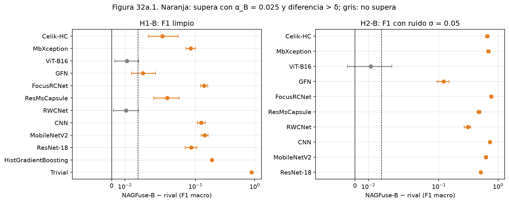
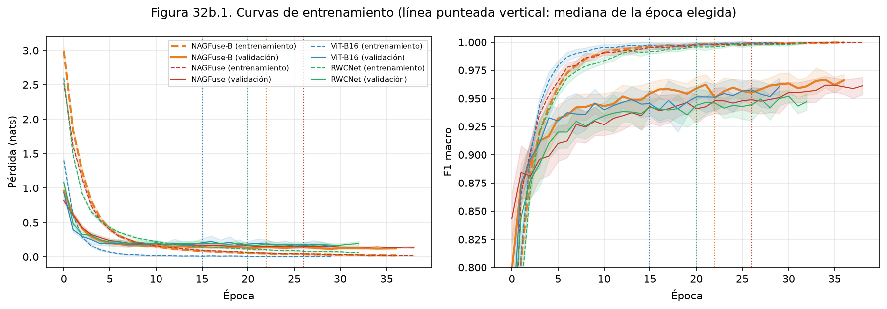
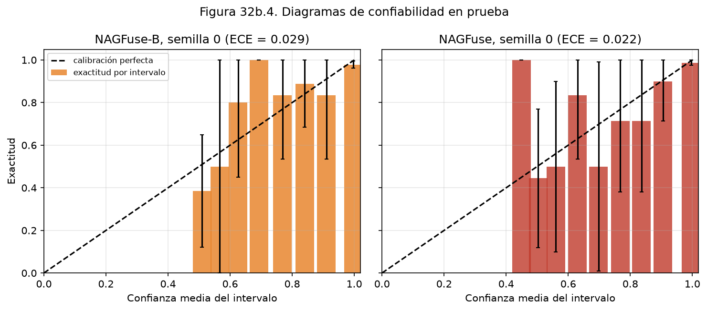

32. Opción B: segundo intento con otras ramas (protocolo v4)#
Note
Las tablas y figuras de este capítulo se reproducen con código ejecutable en los cuadernos 32a. Reproducción de la opción B y 32b. Diagnóstico de entrenamiento y evaluación complementaria de NAGFuse-B. Todas las cifras salen de entregable3/resultados_b/ (análisis de la opción B), de entregable3/resultados/tabla_maestra.csv (la misma tabla que lee el dashboard) y de las corridas versionadas en entregable3/results/.
Los resultados de la versión A (NAGFuse, protocolos v1 a v3) no cambian y siguen siendo los de los capítulos 27, 28 y 30. Este capítulo añade un segundo intento, la opción B, con su propio protocolo y su propia exposición declarada.
32.1 Motivo y contexto#
La versión A cumplió R1 y R2, pero no R3. En F1 macro limpio supera por más de \(\delta\) a 9 de los 12 rivales, pero empata con RWCNet (\(-0.0004\)) y con ViT-B16 (\(+0.0002\)), y frente a GFN su ventaja (\(+0.0125\)) es menor que \(\delta\) (capítulo 27).
Tras conocer esos resultados, el Dr. Lihki Rubio nos indicó por correo, el 24 de noviembre de 2026, que revisáramos los criterios de la guía, nos recomendó explorar combinaciones de modelos o metodologías y dejó a nuestro criterio la estrategia de contar con planes alternativos (A, B, C). Con esa base registramos un segundo intento, la opción B, en entregable3/experiments/protocolo_v4_opcion_B.md.
32.2 Exposición declarada#
El conjunto de prueba ya se había usado para evaluar la versión A, y conocíamos esos resultados al diseñar B.
Para limitar el sesgo:
B no se ajusta con el conjunto de prueba ni con los conjuntos adicionales;
los candidatos se fijaron antes de entrenar, con un argumento a priori (sección 32.3);
la elección entre candidatos usa solo validación (sección 32.4);
la decisión confirmatoria usa \(\alpha_B = 0.025\) en lugar de 0.05 (Bonferroni por dos intentos sobre la misma familia y el mismo conjunto de prueba).
Aun así, B es un análisis decidido después de ver resultados de prueba. La valoración de R3 en estas condiciones corresponde al docente.
32.3 Qué cambia y qué no#
Cambia solo la red de cada rama. El mecanismo es el de A:
estimador MAD sobre la subbanda diagonal de Haar;
contracción suave con umbral universal en la rama convolucional;
mezcla en el espacio de probabilidades, \(p = \pi\,p_R + (1 - \pi)\,p_C\), con \(\pi = \pi_0 + (1 - \pi_0)\,g(\hat\sigma)\);
la misma compuerta, con \(\rho = 2\) y \(s_{lo} = 0.014535\) (el mismo archivo
nagfuse_noise_stats.json);la misma pérdida (NLL de la mezcla más \(0.5\) por la entropía cruzada de cada rama).
Aquí \(p_R\) es la salida de la rama robusta, que en A es ViT-B/16. Los Teoremas 1 y 2 (capítulo 26) no dependen de las redes de las ramas, y las pruebas unitarias verifican el Teorema 2 en cada candidato.
No cambian la partición, el preprocesamiento, los aumentos, los pesos de clase, el optimizador, el número máximo de épocas, la parada temprana, la fuente de pesos preentrenados (ImageNet-1K de torchvision), las métricas, las perturbaciones, los conjuntos adicionales, los rivales (congelados, sin reentrenar), la familia de contrastes, las pruebas ni \(\delta\).
Hiperparámetros. B usa los del intento 1 de la búsqueda de A (lr \(10^{-4}\), weight decay \(10^{-4}\), dropout 0.4) y no tiene búsqueda propia. Es un presupuesto de ajuste menor que el de cada rival (8 intentos).
Candidatos. La bitácora de A (design_log.md, filas 1 a 6) mostró que cambiar solo la rama convolucional, incluso por una más fuerte (DenseNet201), no mejoraba el F1 de validación en más de 0.002. Por eso incluimos candidatos que cambian también la rama robusta. Elegimos redes de torchvision con pesos ImageNet-1K, entrada nativa de 224 px y mayor exactitud en ImageNet que las ramas de A:
Candidato |
Rama robusta |
Rama convolucional (con contracción) |
Parámetros |
Top-1 ImageNet de las ramas |
|---|---|---|---|---|
A (referencia) |
ViT-B/16 |
EfficientNet-B0 |
89.8 M |
81.1 % / 77.7 % |
B1 |
Swin-S |
ConvNeXt-T |
76.6 M |
83.2 % / 82.5 % |
B2 |
Swin-S |
EfficientNet-B0 |
52.8 M |
83.2 % / 77.7 % |
B3 |
ViT-B/16 |
ConvNeXt-T |
113.6 M |
81.1 % / 82.5 % |
B2 y B3 separan el efecto de cada rama: B2 cambia solo la robusta y B3 solo la convolucional.
32.4 Piloto (solo validación)#
Entrenamos cada candidato una vez con el procedimiento del intento 1 de la búsqueda de A (semilla 100, 30 épocas como máximo). Así su F1 de validación es comparable con el de A en ese intento, 0.9688. El piloto no evalúa en prueba: sus carpetas (entregable3/results/results_e2/NAGFuse-B*/hpo/) solo contienen predicciones de validación.
Candidato |
F1 macro de validación |
Mejor época |
Parámetros |
Decisión |
|---|---|---|---|---|
B1 |
0.9801 |
23 de 30 |
76.6 M |
Descartado |
B2 |
0.9851 |
21 de 30 |
52.8 M |
Elegido |
B3 |
0.9703 |
8 de 21 (parada temprana) |
113.6 M |
Descartado |
A (referencia) |
0.9688 |
— |
89.8 M |
— |
Regla fijada antes del piloto: gana el mayor F1 de validación; si dos difieren en menos de 0.002, el de menos parámetros. La fase confirmatoria solo se lanza si el elegido supera 0.9688.
Resultado. B2 supera a B1 por 0.0050 y a la referencia por 0.0163, así que se eligió B2 y se lanzó la fase confirmatoria con NAGFuse-B = B2. Los dos candidatos con Swin-S como rama robusta superan a la referencia, y B3, que conserva ViT-B/16, queda a su nivel. Con una sola semilla el error del F1 de validación es de alrededor de \(\pm 0.005\).
El registro del piloto está en entregable3/experiments/piloto_opcion_B.json y en las filas 8 a 10 de design_log.md (\(N_d = 10\)).
32.5 Ejecución#
Hora de Bogotá |
Evento |
Fuente |
|---|---|---|
24-11-2026 18:10 |
Protocolo v4 antes del piloto; tag |
Git |
24-11-2026 19:43–20:07 |
Piloto: B1, B2 y B3 en una GPU A100-SXM4-40GB (23 min en total) |
Registro del orquestador |
24-11-2026 20:25 |
Candidato elegido registrado; tag |
Git |
25-11-2026 06:45 |
Hora de corte registrada en el protocolo v4 |
|
25-11-2026 18:48–19:26 |
Semillas 0 a 2 en A100-SXM4-80GB |
Registro del orquestador y |
25-11-2026 19:31–19:34 |
Error de entrada/salida en Google Drive ( |
|
25-11-2026 21:48 a 26-11-2026 05:07 |
Se reanuda la cola en una sesión nueva; semillas 3 a 19 en Tesla T4 |
Registro del orquestador y |
Los registros de Colab están en UTC y aquí se convierten a la hora de Bogotá (UTC−5). Las horas de los tags son las de los commits a los que apuntan. El protocolo v4 anota 18:30 y 20:45 para los dos tags; las horas de Git son 18:10 y 20:25.
Cómputo. Las 20 semillas sumaron 7.9 h de cola: 0.6 h en A100 y 7.3 h en T4. El tiempo de entrenamiento por semilla fue de 4.5 a 9.9 min en A100 y de 12.4 a 29.6 min en T4.
32.6 H1-B: F1 macro limpio (decide R3)#
Mismas pruebas que en A: t pareada, Wilcoxon exacta y bootstrap jerárquico (10 000 réplicas, semilla 2026), Holm con \(m = 12\) por prueba, y decide el máximo de los tres p ajustados. Supera si p máx. \(< \alpha_B = 0.025\), la diferencia media es mayor que \(\delta = 0.02\) y el límite inferior del IC 95 % es mayor que cero.
Rival |
R |
Diferencia |
IC 95 % |
p máx. (Holm) |
δ de Cliff |
\(d_z\) |
Decisión |
|---|---|---|---|---|---|---|---|
Celik-HC |
20 |
+0.0385 |
[0.0277, 0.0507] |
0.001 |
1.00 |
1.98 |
Supera (> δ) |
MbXception |
12 |
+0.0832 |
[0.0694, 0.0994] |
0.003 |
1.00 |
5.34 |
Supera (> δ) |
ViT-B16 |
20 |
+0.0115 |
[0.0023, 0.0204] |
0.0248 |
0.60 |
0.86 |
Mejor, < δ |
GFN |
20 |
+0.0237 |
[0.0150, 0.0333] |
0.001 |
0.90 |
1.93 |
Supera (> δ) |
FocusRCNet |
12 |
+0.1399 |
[0.1222, 0.1607] |
0.003 |
1.00 |
5.56 |
Supera (> δ) |
ResMsCapsule |
20 |
+0.0421 |
[0.0319, 0.0531] |
0.001 |
1.00 |
2.74 |
Supera (> δ) |
RWCNet |
20 |
+0.0109 |
[0.0014, 0.0202] |
0.0248 |
0.40 |
0.75 |
Mejor, < δ |
CNN |
12 |
+0.1250 |
[0.1067, 0.1455] |
0.003 |
1.00 |
4.67 |
Supera (> δ) |
MobileNetV2 |
12 |
+0.1430 |
[0.1251, 0.1626] |
0.003 |
1.00 |
5.95 |
Supera (> δ) |
ResNet-18 |
12 |
+0.0852 |
[0.0674, 0.1055] |
0.003 |
1.00 |
3.22 |
Supera (> δ) |
HistGradientBoosting |
20 |
+0.1876 |
[0.1795, 0.1939] |
0.001 |
1.00 |
22.75 |
Supera (> δ) |
Trivial |
20 |
+0.8842 |
[0.8762, 0.8905] |
0.001 |
1.00 |
107.25 |
Supera (> δ) |


Fig. 9 Diferencias pareadas NAGFuse-B − rival con IC 95 % (H1 en limpio y H2 con ruido \(\sigma = 0.05\)). La línea discontinua es \(\delta = 0.02\).#
Resultado. NAGFuse-B (F1 \(0.9477\), IC 95 % [0.9439, 0.9516]) supera a 10 de los 12 rivales con diferencia mayor que \(\delta\), uno más que A (GFN). Frente a ViT-B16 y RWCNet la diferencia es positiva (+0.0115 y +0.0109) y su IC al 95 % excluye el cero, pero es menor que \(\delta\), el margen fijado antes de los experimentos. R3 no se cumple con la opción B, ni con \(\alpha_B = 0.025\) ni con \(\alpha = 0.05\).
Las comparaciones podían detectar \(\delta\). Con las desviaciones pareadas observadas (\(\sigma_d = 0.013\) frente a ViT-B16 y \(0.015\) frente a RWCNet) y 20 semillas, la potencia de la t pareada para detectar \(\delta\) al nivel \(0.025/12\) es de 0.997 y 0.988.
Sensibilidad. Con MCC y con el subconjunto de semillas 0 a 9 el veredicto es el mismo: supera a los mismos 10 rivales y no a ViT-B16 ni a RWCNet. Con MCC, la diferencia frente a ViT-B16 es significativa (\(+0.0143\), p máx. 0.001), pero sigue siendo menor que \(\delta\).
32.7 Hipótesis secundarias y evaluación ampliada#
H2-B (ruido \(\sigma = 0.05\)). NAGFuse-B supera a 9 de los 10 rivales profundos con diferencias de 0.12 a 0.76. Frente a ViT-B16 la diferencia (+0.0119, IC [−0.0057, 0.0279], p máx. 0.165) no es significativa.
H3-B (no inferioridad). Frente al mejor rival en limpio, RWCNet, la diferencia es +0.0109. La no inferioridad se cumple (\(p = 6.2 \times 10^{-9}\)) y la TOST concluye que la diferencia está dentro de \(\pm\delta\) (\(p = 0.006\)).
Robustez y calibración (media sobre 20 semillas):
Modelo |
Limpio |
Ruido 0.05 |
Ruido 0.10 |
Desenfoque |
Oclusión |
Fondo sustituido |
ECE |
NLL |
|---|---|---|---|---|---|---|---|---|
NAGFuse-B |
0.948 |
0.903 |
0.827 |
0.886 |
0.943 |
0.940 |
0.027 |
0.172 |
NAGFuse (A) |
0.936 |
0.904 |
0.859 |
0.865 |
0.928 |
0.920 |
0.030 |
0.191 |
ViT-B16 |
0.936 |
0.892 |
0.840 |
0.864 |
0.932 |
0.916 |
0.039 |
0.224 |
RWCNet |
0.937 |
0.596 |
0.343 |
0.814 |
0.926 |
0.895 |
0.030 |
0.187 |
GFN |
0.924 |
0.783 |
0.522 |
0.775 |
0.922 |
0.896 |
0.051 |
0.309 |
B tiene la mayor media en limpio, desenfoque, oclusión y fondo sustituido, y el menor ECE y NLL. Su IC del ECE ([0.024, 0.029]) se solapa con los de A y RWCNet.
Con \(\sigma = 0.05\), B y A coinciden (0.903 y 0.904).
Con \(\sigma = 0.10\), B (0.827) queda por debajo de A (0.859) y de ViT-B16 (0.840). El protocolo no incluía este contraste. Con ruido la compuerta deja la salida en la rama robusta, y Swin-S se degrada más que ViT-B/16 con ruido fuerte (sección 32.11).
Conjuntos adicionales (sin reentrenar; media de las semillas disponibles de cada modelo):
Conjunto |
NAGFuse-B |
NAGFuse (A) |
ViT-B16 |
RWCNet |
GFN |
|---|---|---|---|---|---|
RealWaste |
0.525 |
0.467 |
0.520 |
0.426 |
0.415 |
Garbage v2 |
0.604 |
0.523 |
0.586 |
0.512 |
0.525 |
WaRP-C |
0.396 |
0.364 |
0.436 |
0.332 |
0.288 |
Frente a ViT-B16 (semillas comunes 8 a 19), la diferencia es +0.008 en RealWaste (p máx. Holm 0.66), +0.019 en Garbage v2 (0.029) y −0.044 en WaRP-C (0.065). Ninguna es significativa al 0.025, y la de Garbage v2 sí lo es al 0.05.
Frente a A, B es mejor en los tres conjuntos: +0.058, +0.081 y +0.032.
El criterio de consistencia del protocolo se cumple con B. Ese criterio pide la mejor media en al menos 2 de 3 conjuntos y no ser significativamente peor que ningún rival en ninguno. B tiene la mejor media en RealWaste y Garbage v2, y en WaRP-C su desventaja frente a ViT-B16 no es significativa. Con A este criterio no se cumplió (capítulo 28).
Friedman con B en lugar de A (11 modelos profundos, bloques = semillas 0 a 11): \(\chi^2 = 109.4\) y \(F_{ID} = 113.1\), con \(p < 10^{-50}\). NAGFuse-B tiene el mejor rango medio (1.75), seguido de RWCNet (2.33) y ViT-B16 (2.50). Con la diferencia crítica de Nemenyi (\(CD = 4.36\)), B no se distingue de los cinco modelos siguientes (RWCNet, ViT-B16, GFN, Celik-HC y ResMsCapsule).
Costo. NAGFuse-B tiene 52.9 M de parámetros y 18.2 GFLOPs por imagen, frente a 89.8 M y 35.9 GFLOPs de A. Ningún modelo con menos GFLOPs tiene mayor F1 limpio, así que B está en la frontera de Pareto del F1 limpio frente al cómputo, donde A no estaba (capítulo 28 y cuaderno 32a. Reproducción de la opción B). Su latencia en GPU con lote de 1 es de 59 ms (de 55 a 61 ms en A100 y en T4), mayor que los 29 ms de A pese a tener la mitad de GFLOPs.
32.8 Mecanismo y comparación con A (exploratorios)#
Compuerta. Con \(\sigma = 0.05\) la compuerta queda abierta del todo (\(\pi = 1\)) en el 100 % de las imágenes de prueba, en las 20 semillas. El peso de partida aprendido es \(\pi_0 = 0.512\) (de 0.508 a 0.515). Apagar la compuerta (\(\pi = \pi_0\) fijo, mismas corridas) reduce el F1 con ruido de 0.903 a 0.897. La diferencia, \(+0.006\), es positiva en 14 de 20 semillas (t pareada \(p = 0.010\); Wilcoxon \(p = 0.004\), sin ajuste). Es mayor que la observada en A (\(+0.001\), no significativa), pero menor que \(\delta\), el umbral que fijaba la predicción P1.
B frente a A. En limpio, B supera a A por \(+0.0113\) (IC 95 % [0.0021, 0.0205]; t pareada \(p = 0.003\), Wilcoxon \(p = 0.003\), bootstrap jerárquico \(p = 0.016\), sin ajuste). Con \(\sigma = 0.05\) no hay diferencia (\(-0.0002\), IC [−0.0153, 0.0138]).
Esta comparación mezcla hardware. A se entrenó en A100; B, en A100 las semillas 0 a 2 y en T4 las semillas 3 a 19. La diferencia B − A es de \(+0.004\) en las semillas 0 a 2 y de \(+0.013\) en las semillas 3 a 19. Con tres semillas no se puede separar el efecto del hardware del de las ramas.
32.9 Declaraciones#
Hora de corte. La cola confirmatoria empezó el 25-11-2026 a las 18:48, doce horas después de la hora de corte registrada (06:45), porque antes de esa hora no hubo una GPU A100 disponible en Colab. Leída al pie de la letra, la regla de corte no dejaba ninguna semilla. Analizamos las 20 semillas previstas, en orden y sin selección.
Hardware mezclado. Semillas 0 a 2 en A100-SXM4-80GB y 3 a 19 en Tesla T4. El código fija el determinismo, pero las operaciones de punto flotante no son idénticas entre GPU. Con RWCNet observamos una diferencia de −0.014 entre una RTX 4060 y una A100 (capítulo 21). En B, la media de las semillas 0 a 2 es 0.941 y la de las semillas 3 a 19, 0.949.
F1 de prueba visible. Como en A (capítulo 27), los registros de entrenamiento imprimen el F1 de prueba de cada semilla, y los vimos durante la ejecución. Después del tag
e3-protocolo-v4no cambiamos ningún hiperparámetro, candidato, rival, prueba ni regla de decisión.Piloto con una semilla. La elección entre B1 y B2 descansa en una diferencia de 0.005 con una sola semilla, del orden del error de validación.
Sin búsqueda propia. B usa los hiperparámetros de A. La comparación con rivales que tuvieron 8 intentos de ajuste es desfavorable para B.
Bitácora corregida. Al registrar el piloto (PR #22), las filas 8 a 10 se pegaron en la tabla de la versión A de
design_log.mden lugar de las filas 1 a 3, que quedaron borradas. Restauramos esas tres filas tal como estaban en el tage3-protocolo-v3y movimos las filas 8 a 10 a la tabla de la opción B; ningún valor cambia. El tage3-protocolo-v4conserva la versión con el error.Dos intentos sobre la misma prueba. \(\alpha_B = 0.025\) corrige la decisión de R3 por los dos intentos. Los contrastes secundarios y exploratorios de este capítulo no llevan esa corrección.
32.10 Reproducción#
Paso |
Comando o archivo |
|---|---|
Entrenamiento |
|
Análisis |
|
Resultados |
|
Figuras y tablas de este capítulo |
32a. Reproducción de la opción B y 32b. Diagnóstico de entrenamiento y evaluación complementaria de NAGFuse-B |
Al regenerar el análisis, los contrastes de A difieren de los versionados solo en las últimas cifras decimales (del orden de \(10^{-16}\)), según la versión de las bibliotecas numéricas. Conservamos los archivos de A tal como estaban.
SHA-256 después de la opción B. Los calcula entregable3/analisis/congelar.py sobre el contenido del repositorio en main (PR #23), con los saltos de línea del repositorio (LF). En Windows, con la conversión automática a CRLF de Git, los valores cambian aunque el contenido sea el mismo.
Directorio |
SHA-256 |
|---|---|
|
|
|
|
|
|
|
|
|
|
Los dos primeros coinciden con los del capítulo 21. Los dos siguientes cambian porque ahora incluyen las corridas de NAGFuse-B y su fila en la tabla maestra; el último se calcula con la misma función.
32.11 Diagnóstico de entrenamiento y evaluación complementaria#
Esta sección repite para NAGFuse-B los análisis que los capítulos 26 a 28 hacen para A. Todos son exploratorios y salen de las 20 corridas versionadas; el detalle está en el cuaderno 32b. Diagnóstico de entrenamiento y evaluación complementaria de NAGFuse-B.
Curvas de entrenamiento y sobreajuste.


Fig. 10 Pérdida y F1 macro por época (media ± DE entre semillas) de NAGFuse-B, A, ViT-B16 y RWCNet. La línea punteada vertical marca la mediana de la época elegida por early stopping.#
Modelo |
Semillas |
Época elegida |
F1 entrenamiento |
F1 validación |
Brecha de F1 |
|---|---|---|---|---|---|
NAGFuse-B |
20 |
25.4 ± 12.9 |
0.998 |
0.973 ± 0.006 |
0.025 ± 0.006 |
NAGFuse (A) |
20 |
26.9 ± 10.9 |
0.998 |
0.967 ± 0.006 |
0.031 ± 0.005 |
ViT-B16 |
12 |
15.4 ± 6.5 |
0.995 |
0.965 ± 0.007 |
0.030 ± 0.005 |
RWCNet |
12 |
19.2 ± 9.4 |
0.992 |
0.959 ± 0.008 |
0.034 ± 0.007 |
NAGFuse-B tiene el mayor F1 de validación y la menor brecha con el de entrenamiento. El patrón es el de un fine-tuning sobre 1800 imágenes: la pérdida de entrenamiento baja casi a cero, la de validación se estabiliza después de las primeras épocas y el early stopping corta donde el F1 de validación ya es estable.
La pérdida de entrenamiento de los dos modelos de fusión empieza más alta porque incluye la supervisión de cada rama; la de validación es la entropía cruzada de la mezcla.
ViT-B16 y RWCNet muestran 12 semillas (8 a 19), las entrenadas en el Entregable 3, como en el capítulo 26a.
Pruebas. Recalculamos la corrección de Holm desde los p sin ajustar de cada prueba: coincide exactamente con la publicada en H1-B y H2-B, y el veredicto es el mismo. El veredicto de H1-B no cambia para ninguno de los 12 rivales con MCC ni con las semillas 0 a 9.
F1 por clase (media entre semillas):
Modelo |
cardboard |
glass |
metal |
paper |
plastic |
trash |
|---|---|---|---|---|---|---|
NAGFuse-B |
0.987 |
0.955 |
0.960 |
0.961 |
0.943 |
0.882 |
NAGFuse (A) |
0.980 |
0.937 |
0.953 |
0.946 |
0.929 |
0.874 |
ViT-B16 |
0.988 |
0.933 |
0.951 |
0.960 |
0.922 |
0.859 |
RWCNet |
0.970 |
0.937 |
0.951 |
0.950 |
0.936 |
0.844 |
B tiene el mayor F1 en cinco de las seis clases. Trash sigue siendo la peor clase en todos los modelos.
Predicción conforme (LAC, \(\alpha = 0.10\), calibrada en validación, mismo código que conforme.py). La cobertura de B es 0.882, con un tamaño medio de conjunto de 0.90 y un 10 % de conjuntos vacíos, en línea con los demás modelos. Su cobertura en trash (0.718) es menor que la de A (0.763) y la de RWCNet (0.755), y mayor que la de ViT-B16 (0.700).
Calibración.


Fig. 11 Diagramas de confiabilidad en prueba de NAGFuse-B y de A (semilla 0), con IC 95 % binomial por intervalo.#
El escalado de temperatura, ajustado en validación, da \(T = 1.12\) para B (1.08 para A). El ECE baja de 0.027 a 0.025 y la NLL de 0.172 a 0.164, la menor de los cinco modelos comparados. Después del escalado, RWCNet tiene un ECE algo menor (0.024). En la semilla 0 el ECE de B (0.029) es mayor que el de A (0.022); en la media de 20 semillas es menor (0.027 frente a 0.030).
Ramas y compuerta. Las salidas por imagen guardadas en cada corrida permiten medir cada rama dentro del mismo modelo entrenado, sin reentrenar:
Condición |
B: mezcla |
B: rama robusta (Swin-S) |
B: rama CNN |
A: mezcla |
A: rama robusta (ViT-B/16) |
A: rama CNN |
|---|---|---|---|---|---|---|
Limpio |
0.948 |
0.943 |
0.921 |
0.936 |
0.925 |
0.924 |
Ruido 0.05 |
0.903 |
0.903 |
0.648 |
0.904 |
0.904 |
0.637 |
Ruido 0.10 |
0.827 |
0.827 |
0.381 |
0.859 |
0.859 |
0.382 |
En limpio, la mezcla mejora a la rama robusta en 0.004 en B y en 0.011 en A. La mejora de B sobre A en limpio viene sobre todo de la rama robusta: Swin-S sola (0.943) ya supera a la mezcla de A.
Con ruido, la salida es la de la rama robusta (\(\pi = 1\)). Con \(\sigma = 0.10\), la rama Swin-S de B (0.827) se degrada más que la rama ViT-B/16 de A (0.859); de ahí la diferencia entre B y A en ese escenario.
Las ramas CNN de los dos modelos se comportan casi igual: tienen la misma arquitectura (EfficientNet-B0 con contracción), entrenada por separado en cada modelo.
Predicciones del mecanismo en B. P1 no se cumple (apagar la compuerta reduce el F1 con ruido en 0.006, menos que \(\delta\)). P2, P3 y P4 se cumplen: apagar la compuerta no cambia el F1 limpio, la ventaja sobre RWCNet crece de 0.307 con \(\sigma = 0.05\) a 0.484 con \(\sigma = 0.10\), y \(\hat\sigma\) crece con el ruido (0.000, 0.051 y 0.098) con la compuerta abierta en el 100 % de las imágenes. P5 no se puede evaluar en B, porque exige la variante sin contracción reentrenada.
Sensibilidad de la compuerta. Con \(\rho\) entre 1.5 y 4 y \(s_{lo}\) entre la mitad y el doble del valor preregistrado, el F1 medio de B cambia como máximo 0.001 en las tres condiciones, como en A.
Errores (semilla 0). En limpio, B comete 20 errores y su rama robusta 18: la mezcla corrige 1 error de la rama y añade 3. En la media de las 20 semillas, la mezcla mejora a la rama robusta (tabla anterior). Con ruido, B y su rama robusta cometen exactamente los mismos errores. Las confusiones más frecuentes son entre plástico y vidrio, vidrio y metal, y papel y cartón.
Lo que no se repite. No entrenamos para B la ablación reentrenada de A (variantes sin contracción, solo rama robusta y solo rama CNN), que exige tres modelos más con 12 semillas cada uno; la tabla de ramas la sustituye en parte, pero no equivale a una variante entrenada por separado. La curva de aprendizaje frente al tamaño de muestra no se calculó para ningún modelo.